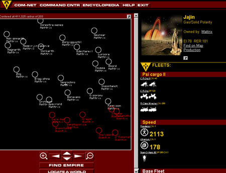

|
| ||
|
| ||
Nadja Vol Ochs
Microsoft Corporation
Updated January 28, 1998
The following article was originally published in the Site Builder Network Magazine "Site Lights" column (now Design Discussion in MSDN Online Voices.
The technology I have been learning lately is no newcomer on the World Wide Web block, but it may be new to many Web designers. It's called Active Server Pages (ASP) technology. Perhaps you already know -- from working on a Web project on your own or with a developer -- what Common Gateway Interface (CGI) can do for your site. CGI is a Web standard for how servers, external programs, and scripts are used to communicate. ASP technology is a great alternative to using CGI.
Look in the Address Bar at the top of this Web page, and notice the filename -- especially its extension (site012198.asp). Ever wonder what happened to the good old .htm and .html extensions? What is an .asp extension? What kind of page is this?
When you see the .asp extension, you are looking at a page created with ASP technology. Introduced in Internet Information Server (IIS) 3.0, ASP is a server-side execution environment that enables you to run ActiveX scripts and ActiveX server components on the server. By combining scripts and components, you can create dynamic content and powerful Web-based applications easily. The technology allows you to design your site with interactivity that is faster than that generated with CGI.
For example, if you are creating an online catalog, you will most likely have a design template for all catalog pages that are similar. Traditionally, this design is generated by hand in HTML, and different data is presented within the template design. One ASP page can be used to generate all the template pages required to display items from a database in the proper pages, in the right locations, and with the proper UI or related content. This alleviates all the redundant page generation required in the catalogue. ASP also reduces the site down to one page, with scripts that generate the rest of the site.
If you are a Web designer, you probably won't learn ASP scripting by heart. But it is nice to know how ASP can help you create more powerful Web applications and user-friendly designs.
First, understand when you might use CGI. Web authors use CGI when they want pages generated on the fly, or pages that can change according to user input. If you plan to use CGI, you might consider using ASP technology instead. ASP does have some server technology requirements. If you know you can host your content on a Windows NT machine running IIS, then you are set to incorporate ASP functionality into your Web design.
To learn ASP technology, put aside your fear of getting technical; don't be afraid to stretch the other side of your brain. Most Web designers will want to understand the possibilities of ASP technology, but not necessarily create the scripting required for advanced ASP projects.
To understand those possibilities, look at some of the sites already using ASP pages. Then think about things your Web site, or your client's site, is trying to achieve, and how ASP functionality might help.

Figure 1. The Ultracorps game site
Some sites use ASP technology quite extensively. A site for the game UltraCorps: The Ultimate Multiplayer Intergalactic Strategy Game  , created by VR1, Inc., uses ASP to generate all of the pages for the game. They use ASP technology for logging users in and out of the game with passwords, for generating personalized pages for news and headlines, for customizing user interfaces for each individual user, for displaying battle news and results, and for newsgroups and e-mail messages. The game's e-mail service, called Ultra Mail, is dynamically made with ASP pages, and allows players to post messages to the newsgoups or to recieve HTML e-mails from other game players. ASP is also used for purchasing and deploying fleets.
, created by VR1, Inc., uses ASP to generate all of the pages for the game. They use ASP technology for logging users in and out of the game with passwords, for generating personalized pages for news and headlines, for customizing user interfaces for each individual user, for displaying battle news and results, and for newsgroups and e-mail messages. The game's e-mail service, called Ultra Mail, is dynamically made with ASP pages, and allows players to post messages to the newsgoups or to recieve HTML e-mails from other game players. ASP is also used for purchasing and deploying fleets.
A strategy game, played via the Internet, Ultracorps allows thousands of players to compete for dominance of a universe made up of thousands of planets. UltraCorps enables players to build empires, harvest resources, acquire new technologies, participate in political interaction, and ultimately engage in battle. As a turn-based game with real-time social interaction, UltraCorps is not encumbered by latency (it is not a heavy site that loads slowly). Thanks to the effective use of ASP technology and a lightweight interface, this site is quick and easy to use and navigate.
This site is currently running turns for the game. You can sign up as a game player to join in and experience it in full action.
To begin learning ASP technology, I recommend starting with a small sample and having a developer nearby to answer questions, or even write the first code with you. With a developer's help, I spent a few hours creating the samples below for my personal Web site. (Cross-version note: These samples will work in Internet Explorer 3.x, as well as Internet Explorer 4.0.)
I wanted to do something fun with my cat. I know, I know: It's a cliché for pet owners to plaster their little furry friends all over their home pages. But I wanted to do something new. I wanted to take my cat to a place where no digital feline had ever gone before.
After a little brainstorming with my cat, Ozmo, I finally decided to have a page that anyone could ask various questions of the highly intelligent feline, who would return a cosmic or humorous answer. The next step was to ask my friend -- the developer, not Ozmo -- about the best way to author this page so that Ozmo's answers would be randomly generated. I was looking for that magic eight ball illusion of randomness. To my surprise, I found out that I could do this using ASP technology, and that I only needed one page to do it. With CGI, it would have taken several pages of HTML. I was excited to learn how one ASP page would generate all the question and answer pages pages. Thus began development of the Ask the Great Cosmic Ozmo page.
Here are the steps I took in creating the Ask Ozmo questionnaire:
| 1 | Create the graphics and design of the pages. Start by creating the graphics and deciding on the layout of the questionnaire page. I kept the page simple, with one image, some text, and a form. | |
| 2 | Writing and formatting the answers to the questions. I then wrote a list of answers to the question and saved them in a text file. I also added HTML formatting to each of the answers. For example, answer #1 looks like this in the text file.
<FONT FACE="Comic Sans MS" SIZE=6 COLOR=black> Meow...the outlook is good!</FONT> |
|
| 3 | Authoring the ASP page. Then I sat down with a developer to work out how to write the following ASP file. This sample ASP file generates all the pages needed for the question and answers. View the sample or the source code. |
Another place that it made sense to use Active Server Pages on my personal site was in the gallery. I wanted to set up a gallery for the black and white photographs that I took while in college. I knew that all the pages for viewing the images at a larger size would be the same. ASP technology allowed me to create one HTML page that communicates via scripting with one ASP page. The ASP page generates the six pages for viewing the enlarged images.
Follow these easy steps, and use my source code to create a gallery on your site that uses ASP functionality.

|
1 | Preparing the Images. Crop and size the images for the gallery to the largest sizes you want to display. The images in my gallery range from a 287-pixel by 200-pixel JPEG to a 200-pixel by 131-pixel JPEG. Because these images are continuous-tone photographs, I saved them as 24-bit JPEGs at High Quality level 6 in Adobe Photoshop. There is no need to convert this type of image to an 8-bit browser-safe palette or an adaptive palette, because the browser will determine the dithering when the system is set at 8-bit viewing. I also prefer the added visual advantage of 24-bit systems, since visitors will be able to see my photographs at the best possible quality. |
| 2 | Authoring the Main Gallery Page. This page is a simple HTML table layout. I positioned each photograph inside a white table cell. I reduced the image display size to one half the original file to create the thumbnails. | |
| 3 | Authoring the Active Server Page. Once again, I sat down with my developer friend to work out how to write the following ASP file. This sample ASP file generates all the pages that show the photographs as larger files, with comments and titles. View the sample or the source code. |
I recommend learning all you can about ASP technology and the possibilities of using it in your site design. By learning more about ASP functionality, you become aware of how you can really take advantage of the server to create different designs for you. You learn how to reduce the redundancy of several HTML pages by creating one ASP file that generates those pages on your site.
If you are designing online catalogues, games, stores that sell merchandise -- or if areas of your sight have redundant or similar interfaces -- then ASP technology is one solution that will help in simplifying the site design and construction.
Headquartered in Boulder, Colo. -- with development facilities in St. Petersburg, Russia, and Toronto, Canada -- VR-1, Inc. creates massive, multiplayer online games and technologies. VR-1 can be found on the World Wide Web at http://www.vr1.com/  .
.
Q: How do you leverage ASP technology?
A: Once players log into the game, via ASP/SQL server, 90 percent of all pages they access are ASP pages.
Q: Any tips for authoring ASP pages?
A: One technique is to reuse ASP functions (using ASP #Include abilities) in other ASP pages. Also, ASP pages typically encompass a mix of HTML, JavaScript, and ASP, so it's important to keep the pages organized.
Q: Any favorite ASP technology resources?
A: Working with Active Server Pages by QUE was the most helpful.
The Visual Basic® Scripting Edition (VBScript) reference  is also handy.
is also handy.
Q: Do you generate graphics using ASP technology?
A: Graphics, such as the game map, are Microsoft Visual C++® ISAPI DLLs that are dynamically linked into IIS. The map is called from an ASP page and passed certain variables, which access the database server and generate a GIF file in real time.
Q: How does ASP technology help in game production?
A: Administration pages using ASP technology allow game administrators to view such things as player count and active players -- and to add, modify, and delete games.
Q: How does ASP technology help in creating a multiplayer, turn-based game?
A: The ASP environment enables us to generate dynamic content where needed, and to exploit static content sources, allowing us to optimize the game for a high number of active players, on a relatively moderate hardware configuration. Also, we utilize ASP session and application objects to capture and retain player activity throughout daily logon sessions.
Q: Who on the team learned ASP?
A: One of our database programmers quickly came up to speed on ASP architecture and VBScript, and has done the lion's share of the ASP work; a few of us have dabbled.
Did you find this material useful? Gripes? Compliments? Suggestions for other articles? Write us!
© 1999 Microsoft Corporation. All rights reserved. Terms of use.